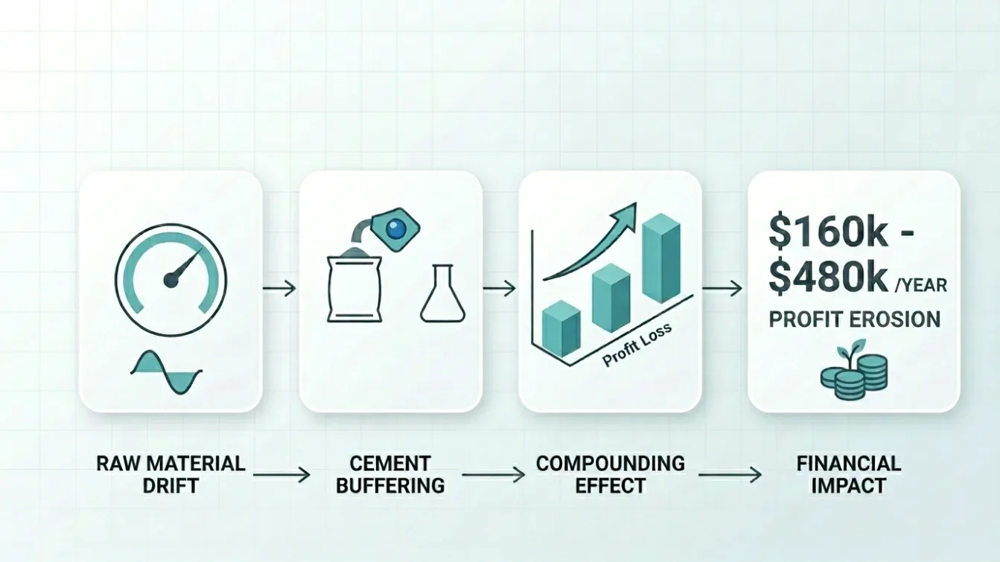
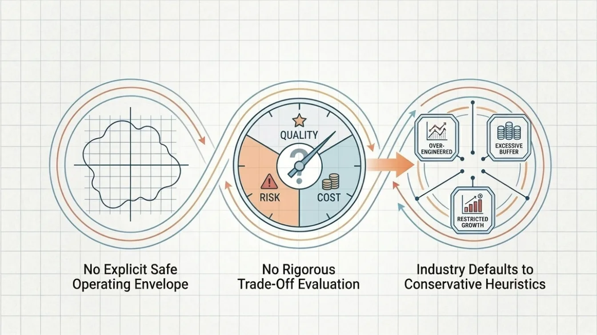
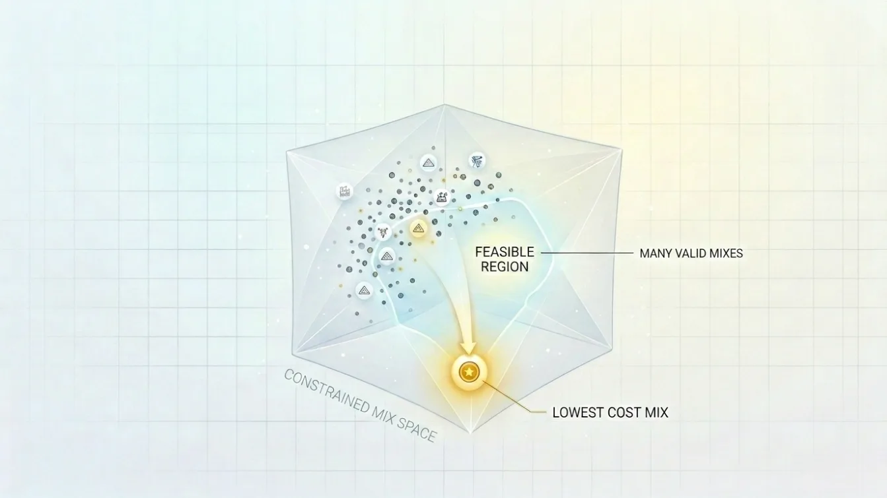
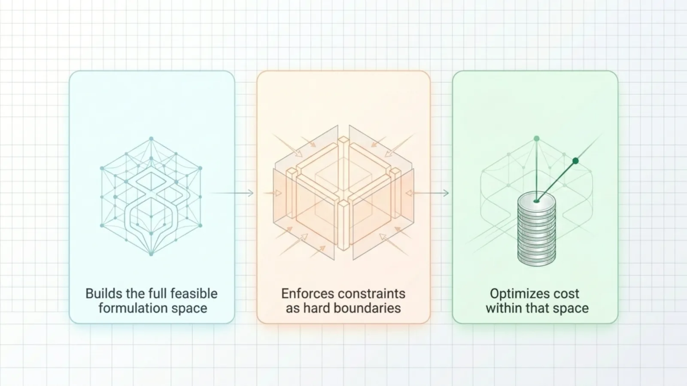
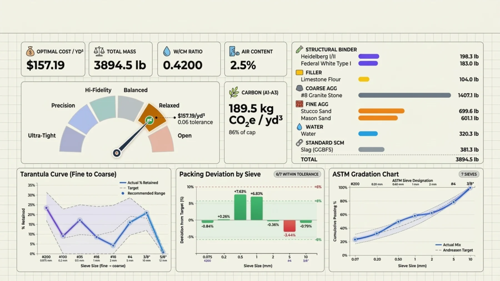
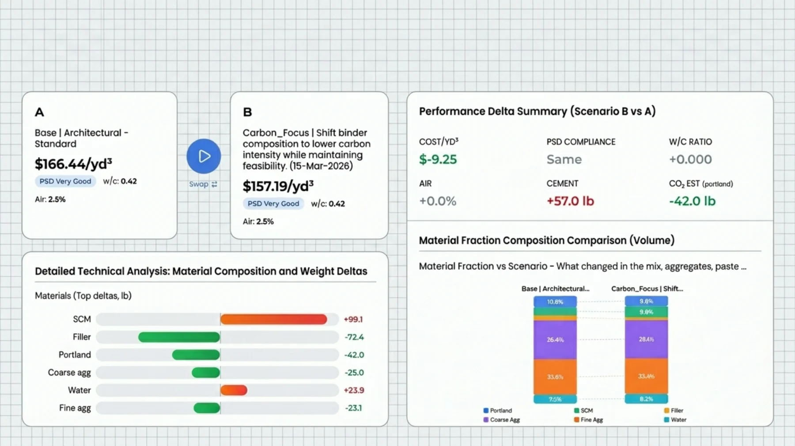
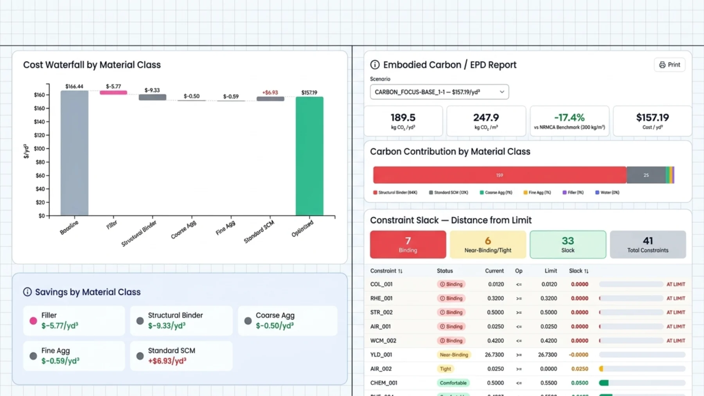
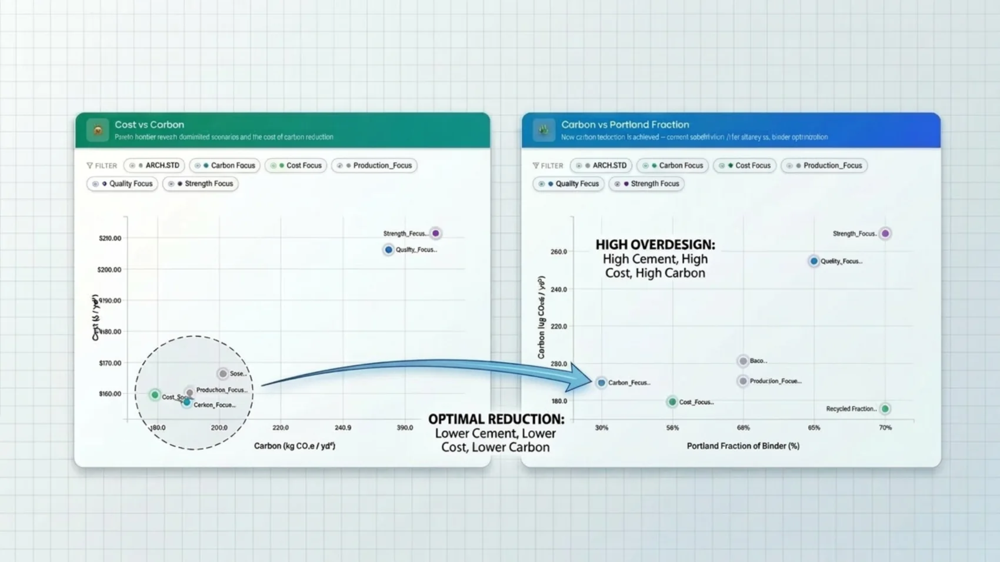
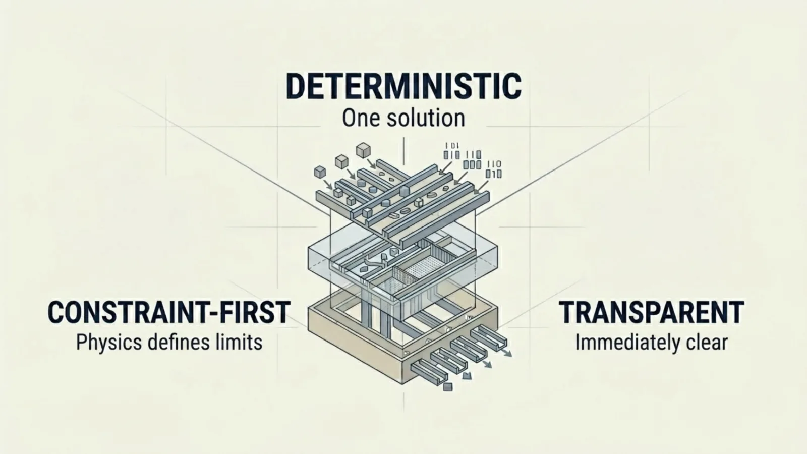
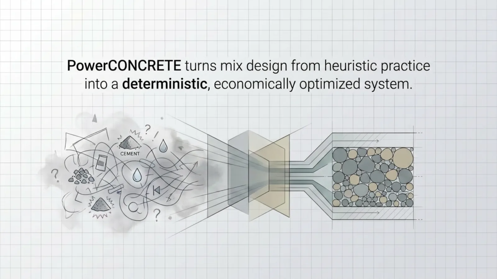

PowerCONCRETE finds the lowest-cost concrete mix that still meets every requirement you have — strength, finish, durability, workability, color, carbon — and shows you exactly which limits are holding it there.
Cement chemistry shifts between mill runs. Quarries evolve, so gradation drifts. Supplementary cementitious materials vary in reactivity and fineness.
Your lab absorbs all of it the only way it safely can — a few extra pounds of cement here, a wider margin there. It works. It also never comes back off.
For a plant running 20,000–40,000 yd³ a year, 40–60 lb/yd³ of accumulated caution is $160,000–$480,000 in recurring annual margin — spent again every year, embedded in recipes nobody has re-derived from first principles.

Stripping failure is expensive. Surface defects get rejected. Curing cycles are locked to the schedule. When uncertainty rises, adding margin is fast — and recalculating is not.

Conservative buffering is the correct response to variability when you have no other instrument. It protects the schedule, the finish, and the customer.
Without a computed boundary, there is no way to know how much margin is engineering and how much is habit. So the margin only ever grows.

Not one. For any product you make, a whole set of formulations clears strength, finish, durability and workability.
Its edges are physics and chemistry — packing, paste balance, w/cm, binder limits — not opinion.
Almost certainly not at the cheap end, because nothing in the normal workflow ever pushes it there.
Nothing is inferred from history. Everything is computed from your materials, your specifications and your plant's own rules.

Every mix your actual materials can produce — densities, particle size distributions, chemistries, costs and carbon factors from your own library.
Not preferences to be traded away. Walls. The solver cannot return a mix that breaks one of them.
And names the limits that are holding it there — so your engineers can see what a change would actually be worth before making it.
When something changes — new cement chemistry, a different quarry, a price move — the feasible space is recomputed and a new optimum is returned. Variability stops being financed with cement.
Your manufacturing method, curing process, equipment, labor practices and QC procedures are treated as fixed inputs — not variables to be optimized.
Your lab updates material data and computes a new optimized formulation. Existing spreadsheets and habits stay available alongside it.
The resulting mix goes through your standard trial, approval and release procedure before it ever reaches production.
Batching systems, quality control and production operations are untouched. Nothing about how you build changes.
Real screens from the product. Click any of them to read the numbers.

Click to enlarge
Click to enlarge
Click to enlargeGeneral contractors and owners are making embodied carbon a condition of the job. The useful surprise is that you don't have to buy it.

Carbon-focus scenarios cut embodied carbon 12–19% against base mixes while holding or reducing material cost.
In mix families already engineered for low carbon intensity, the carbon-focus scenario reaches below 120 kg CO₂e/yd³ at essentially no premium over the base mix. And when a GC asks for an EPD, you already have the report.
Representative model results. Plant-specific values depend on local materials, cement factors, SCM availability and performance constraints.
Which is why a small change to the formulation multiplies across an entire production year. A representative mid-tier operation:
No operational disruption. No new equipment. No staffing changes. The saving is structural — it comes from replacing conservative buffering with engineered constraint control, on a decision you already make every time a mix is designed.

A spreadsheet evaluates one candidate mix against nominal assumptions. It cannot define a feasible envelope, enforce constraints across chemistry, packing and rheology at once, or solve for an economic optimum. It executes engineering judgment — it doesn't expand it.
Dispatching, moisture compensation, inventory, scheduling. Genuinely valuable, and complementary — but all of it operates downstream of the mix decision, never on it.
Pattern-based prediction in exchange for constraint enforcement and interpretability. When stripping is on the line, knowing why a formulation is safe matters as much as knowing that it probably is.
Transparency — engineers see which constraints govern the solution, and why. Reliability — the solver cannot propose a mix that violates a defined limit; safety is enforced, not weighted. Interpretability — binding constraints and sensitivities are directly observable, so a decision can be explained and defended.
